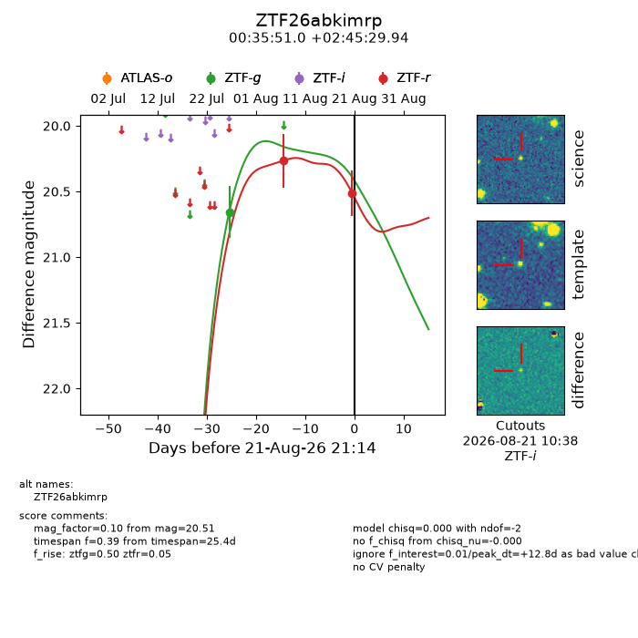
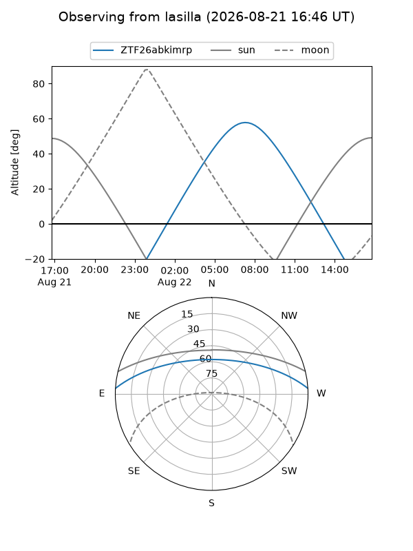
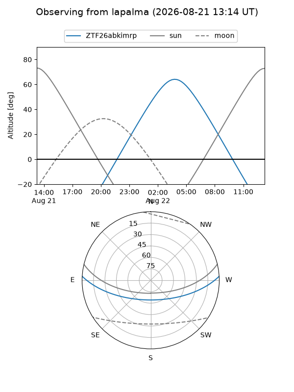
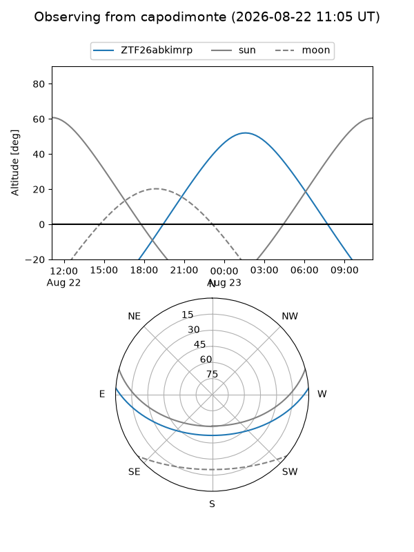
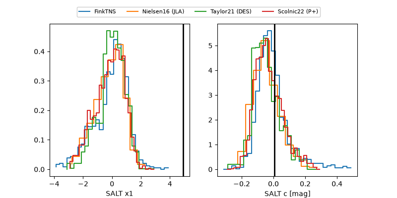

ZTF26abkimrp
Target ZTF26abkimrp at 2026-08-21 21:17
Aliases and brokers:
FINK-ZTF: ztf.fink-portal.org/ZTF26abkimrp
Lasair-ZTF: lasair-ztf.lsst.ac.uk/objects/ZTF26abkimrp
ALeRCE-ZTF: alerce.online/object/ZTF26abkimrp
Direct TNS query: direct search
alt names
ZTF26abkimrp (ztf,fink_ztf)
Coordinates:
equatorial (ra, dec) = 8.9624,+2.75832
equatorial (HMS+DMS) = 00:35:50.98,+02:45:29.94
galactic (l, b) = (115.1576,-59.87792)
Flags:
peak dt: +12.8
Photometry:
last ztfg=20.66, ztfr=20.51
1 ztfg, 2 ztfr detections
Lightcurve

Visibility



Additional plots
